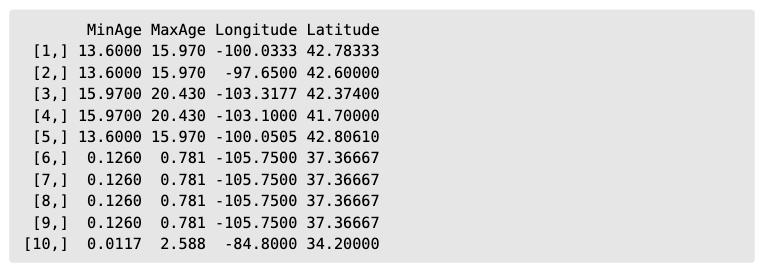
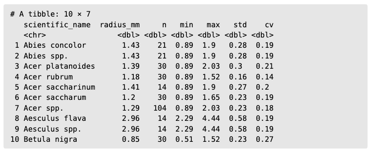
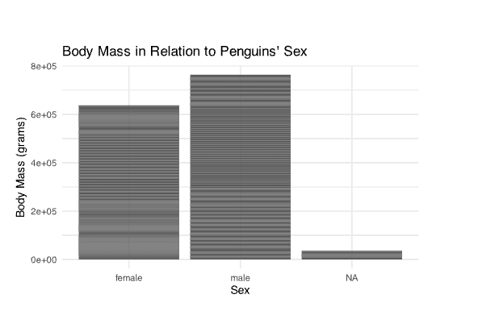

data |>
filter(year == 2020) +
ggplot(aes(x = age, y = income)) +
geom_point() +
theme_minimal()Quiz 1
Data Types & Chart Selection
Types of Variables
Assign the right number to each sentence:
- ) Binary
- ) Ordinal
- ) Nominal
- ) Continuous
- ) Discrete
5 Can take any countable value represented as an integer
3 Categories have no clear order, and are mutually exclusive
1 Only takes two possible values, and are typically represented as 1 or 0.
2 Have a clear ordering of the categories
4 Can take any measurable value within a given range, including fractions and decimals
Analytical Goals and Chart Selection
For the following datasets (6-8), 1) come up with an analytical goal, 2) state what variables you will use and identify its type, and 3) identify what chart will facilitate your observations.
- A dataset of laboratory measurements of kidney function over time for the 1500 patients with the following variables:
- ID: patient identifiers
- TRTPN: treatment values, 1 Active or 2 Placebo
- AVAL: measurement value
- ADAY: measurement day in the study
- AVISITN: hospital visit number
- PARAM: name of the event, GFR measurement
- PARAMCD: coded name of the event, GFR
- PARAMN: type of the event is set to 7 for all measurements
Your Answer:
- A data frame where each row is a single fossil with the following variables:
- MinAge: Minimum age of fossil
- MaxAge: Maximum age of fossil
- Longitude: Longitude of occurrence
- Latitude: Latitude of occurrence

Your Answer:
- Database of twig radii by tree species data with the following variables:
- scientific_name: The tree’s genus and species
- radius_mm: The average twig radius in millimeters
- n: The twig measurement sample size
- min: The minimum twig radii from the samples
- max: The maximum twig radii from the samples
- std: The standard deviation of twig radii
- cv: The coefficient of variation of twig radii

Your Answer:
Grammar of Graphics
Understandig GG
- GG allows creation of graphs to be _________, __________, and ________
Solution: modular, reproducible, concise - other answers in this spirit also accepted
- What is aesthetic mapping?
Solution: Aesthetic mapping links variables in a dataset to visual features of a plot (such as position, color, size, or shape) using aes().
- Who formalized the grammar of graphics?
- Clara Reckhorn
- Leland Wilkinson
- Stephen Few
- Kieran Healy
Solution: b)
- Which of these isn’t part of the GG elements
- Statistics
- Theme
- Analysis
- Coordinates
Solution: c)
Application

- Identify the following GG elements for the plot above: dataset, aesthetic mapping, and geometry
Solution: dataset = palmerpenguins::penguins, aes(x = sex, y = body mass), geom_col()
Data Cleaning
Open ended
- Why is data cleaning important?
Acceptable Solutions: Data cleaning is important because it ensures the data is accurate, consistent, and usable for analysis. Cleaning helps remove errors, missing values, duplicates, or incorrect formatting that could lead to misleading results or incorrect conclusions. It also makes the data easier to analyze and visualize.
Multiple Choice
A dataset contains the following column:
| Transfer Students |
|---|
| Transfer |
| transfer |
| T |
| non transfer |
| NT |
| Non-transfer |
- What is the main data cleaning issue here?
- Missing values
- Duplicate rows
- Inconsistent categorical labels
- Incorrect numerical values
Solution: c)
- Why is data cleaning necessary before running statistical analysis?
- Because statistical models understand the meaning of messy data
- Because computers automatically interpret inconsistent labels correctly
- Because computers require structured, consistent inputs to produce valid results
Solution: c)
- If a company does not properly clean its sales data before building a predictive model, what is the most likely outcome?
- The model will run faster
- The model will automatically fix errors
- The results may be biased or misleading
- The model will become more accurate
Solution: c)
EDA
- Which of the following is the MOST accurate description of what EDA helps a data analyst accomplish? (only one option)
- It proves that a hypothesis is correct.
- It replaces the need for statistical tests.
- It helps identify patterns, anomalies, and variable relationships before formal analysis.
- It converts categorical variables to continuous ones.
Solution: c)
- True or False: EDA is only necessary when a researcher suspects there are errors in the dataset.
Solution: F
ggplot2
- In ggplot2, what is the purpose of aes()?
Solution: to map data variables to visual elements of the graph
- Which function do you use to initialize a plot in ggplot2?
- plot()
- ggplot()
- graph()
- draw()
Solution: ggplot()
Fill in the blanks with either + or |> in the correct places: